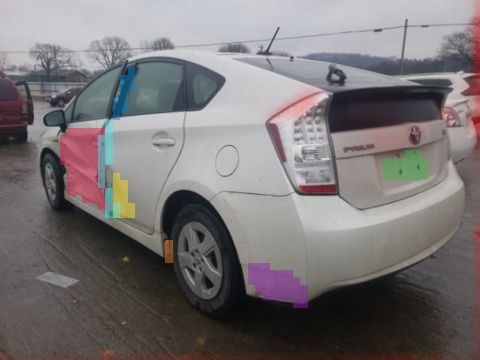

Condición (solo para el revisor): C4 · etiqueta controlada: SUSPICIOUS

Según la evidencia visual, el vehículo presenta abolladuras. Se describe el estado visible.
INSUFFICIENT — SUPPORTED: 0.560 · SUSPICIOUS: 0.440 · INSUFFICIENT: 0.000
U = 0.686 (τU = 0.679) · c̄ = 0.625 (τc = 0.000)
Se abstuvo: incertidumbre U=0.686 > τU=0.679
| nodo | tipo | g | c,q,r,u |
|---|---|---|---|
| 0 | claim | 0.172 | [0.25, 1.0, 0.6927, 0.0099] |
| 1 | source | 0.832 | [1.0, 0.8321, 1.0, 0.0] |
| 2 | visual | 0.121 | [1.0, 0.9423, 0.3162, 0.5922] |
| 3 | visual | 0.001 | [1.0, 0.6822, 0.5441, 0.9982] |
| 4 | visual | 0.000 | [1.0, 0.4701, 0.3162, 0.9986] |
| 5 | visual | 0.010 | [1.0, 0.557, 0.4202, 0.9585] |
| 6 | visual | 0.001 | [1.0, 0.1464, 0.0909, 0.9344] |
| 7 | visual | 0.029 | [1.0, 0.8503, 0.3162, 0.892] |
| 8 | visual | 0.044 | [1.0, 0.7362, 0.4202, 0.857] |
| 9 | forensic | 0.211 | [1.0, 0.8321, 0.6445, 0.6061] |
| origen | destino | relación | peso g·p |
|---|---|---|---|
| 0 | 2 | support | 0.121 |
| 0 | 3 | unknown | 0.001 |
| 0 | 4 | support | 0.000 |
| 0 | 5 | support | 0.010 |
| 0 | 6 | unknown | 0.001 |
| 0 | 7 | support | 0.029 |
| 0 | 8 | support | 0.044 |
| 2 | 8 | overlap | 0.005 |
| 4 | 8 | overlap | 0.003 |